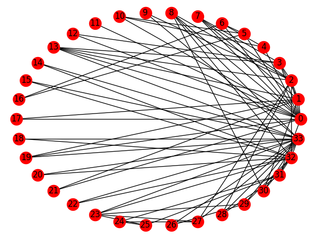

Note
Click here to download the full example code
Karate Club¶
Zachary’s Karate Club graph
Data file from: http://vlado.fmf.uni-lj.si/pub/networks/data/Ucinet/UciData.htm
Reference: Zachary W. (1977). An information flow model for conflict and fission in small groups. Journal of Anthropological Research, 33, 452-473.
Out:
Node Degree
0 16
1 9
2 10
3 6
4 3
5 4
6 4
7 4
8 5
9 2
10 3
11 1
12 2
13 5
14 2
15 2
16 2
17 2
18 2
19 3
20 2
21 2
22 2
23 5
24 3
25 3
26 2
27 4
28 3
29 4
30 4
31 6
32 12
33 17
import matplotlib.pyplot as plt
import networkx as nx
G = nx.karate_club_graph()
print("Node Degree")
for v in G:
print('%s %s' % (v, G.degree(v)))
nx.draw_circular(G, with_labels=True)
plt.show()
Total running time of the script: ( 0 minutes 0.067 seconds)